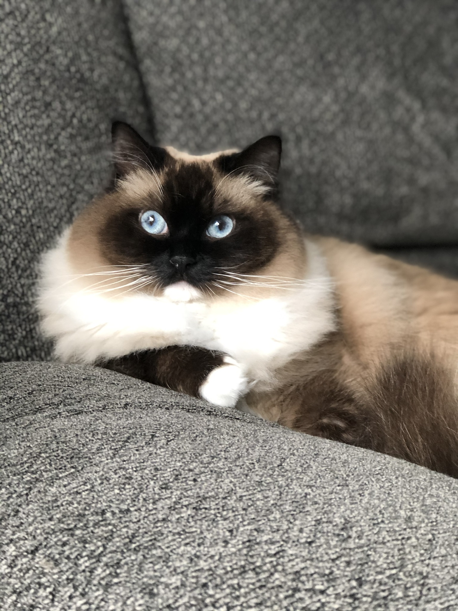
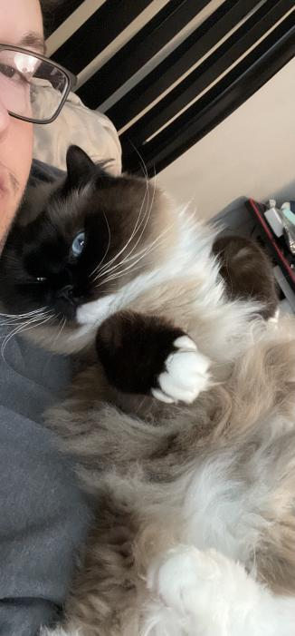
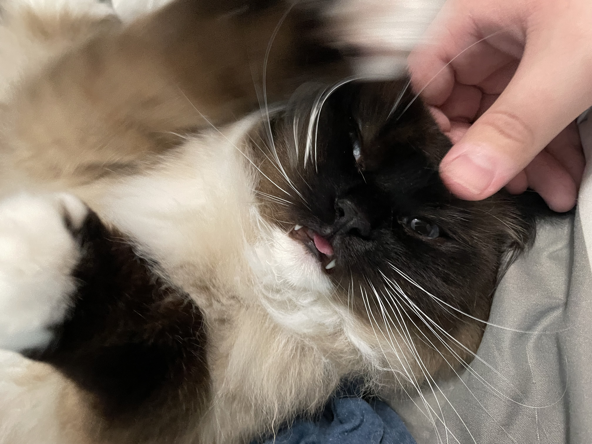
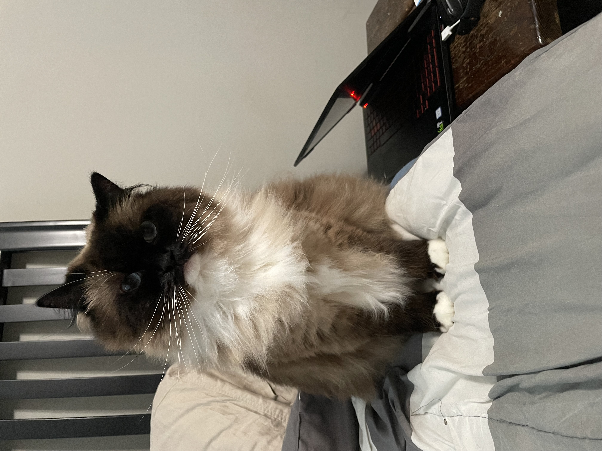
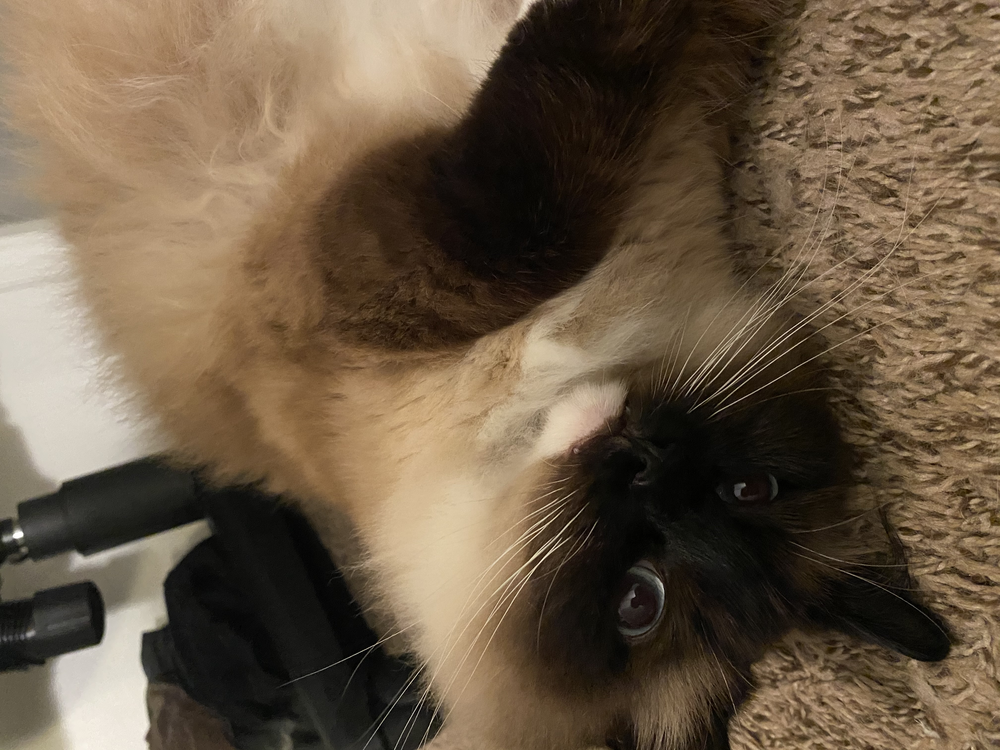
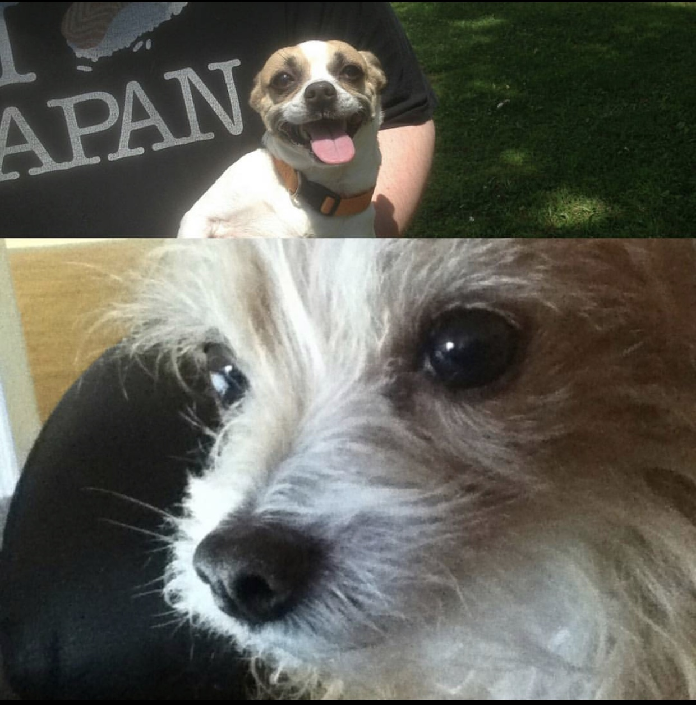

My furry companions!
My only pet currently is my cat named Abby!
She's a ragdoll cat, and she's very sweet and very cuddly!
Sometimes she enjoys getting pet so much that she sticks her tongue out!
And if you stop petting her, she'll look at you until you keep going!
She's super sweet, and I don't know what I would do without her!
My old dogs are named Simon (top) and Hank (bottom). Sadly they are no longer with us, but they were spoiled rotten for their whole lives!
|
My only pet currently is my cat named Abby! |
She's a ragdoll cat, and she's very sweet and very cuddly! |
|
Sometimes she enjoys getting pet so much that she sticks her tongue out! |
And if you stop petting her, she'll look at you until you keep going! |
|
She's super sweet, and I don't know what I would do without her! |
My old dogs are named Simon (top) and Hank (bottom). Sadly they are no longer with us, but they were spoiled rotten for their whole lives! |